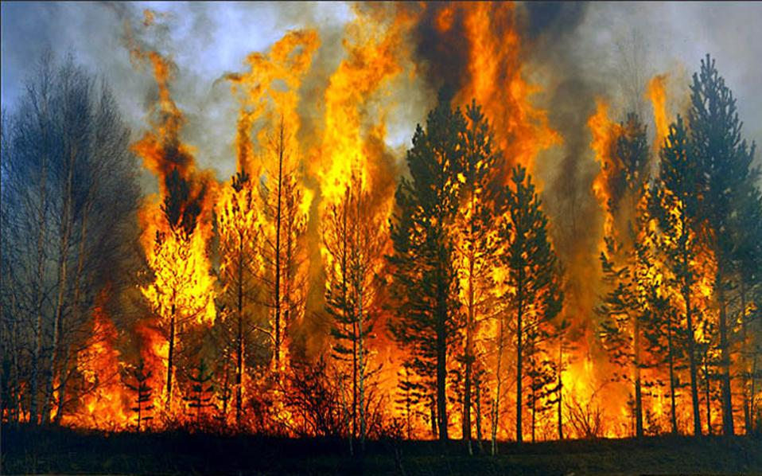

ΓΕΝΙΚΕΣ ΠΛΗΡΟΦΟΡΙΕΣ

Ραγδαίες αλλαγές χρήσεων γης, λόγω της επέκτασης των οικονομικών δραστηριοτήτων και του αστικού χώρου, κατακερματισμός των δασικών εκτάσεων από τις μεταφορικές υποδομές, υπερεκμετάλλευση των πόρων και ρύπανση του περιβάλλοντος έρχονται να ενώσουν τις δυνάμεις τους με τις επιπτώσεις της κλιματικής αλλαγής, δημιουργώντας ένα επικίνδυνο μείγμα.
Η πιο άμεση και ραγδαία επίπτωση της κλιματικής αλλαγής στα μεσογειακά δάση αφορά στις δασικές πυρκαγιές.
ΠΩΣ ΜΠΟΡΕΙΣ ΝΑ ΒΟΗΘΗΣΕΙΣ
ΕΠΙΣΚΕΨΟΥ ΤΙΣ ΠΑΡΑΚΑΤΩ ΣΕΛΙΔΕΣ ΚΑΙ ΚΙΝΗΤΟΠΟΙΗΣΟΥ
ΜΕΤΡΑ ΑΠΟΦΥΓΗΣ ΠΥΡΚΑΓΙΩΝ